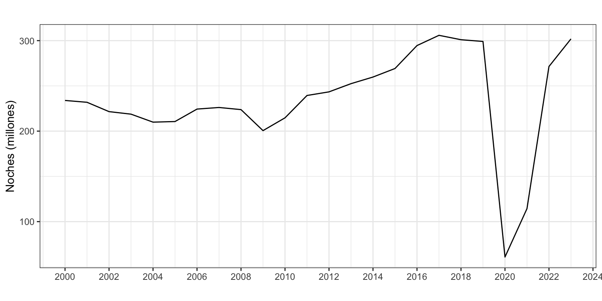
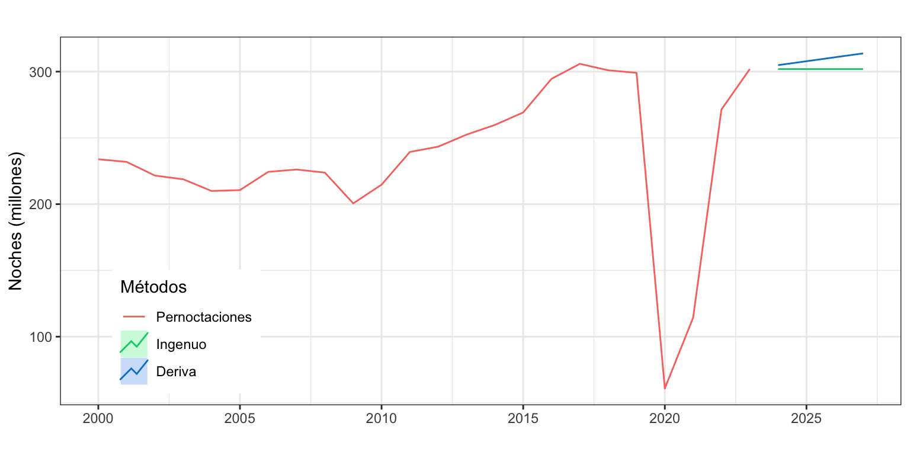
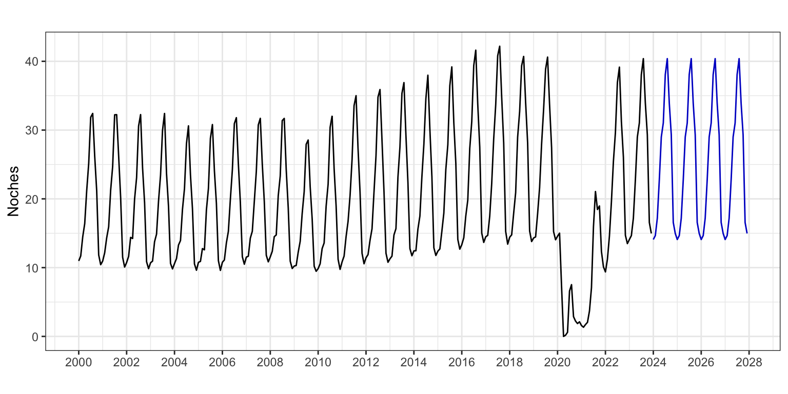
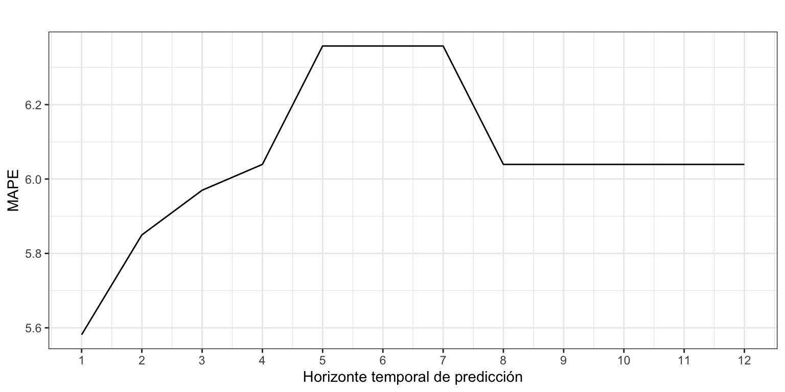

Pernoctaciones <- read.csv2("./series/Pernoctaciones.csv",
header = TRUE)
Pernoctaciones <- ts(Pernoctaciones[, 2] / 1000000,
start = 2000,
frequency = 12)Pernoctaciones en alojamientos turísticos de turistas extranjeros
Métodos sencillos
1 Introducción
Consideremos de nuevo la serie temporal correspondiente al número de pernoctaciones que los turistas extranjeros realizan en España en alojamientos turísticos autorizados (que llamaremos Pernoctaciones en adelante). Esta serie está disponible en Eurostat desde enero de 2000 hasta diciembre de 2023, un total de 24 años y 288 observaciones. La unidad original es número de pernoctaciones, así que dividiremos la serie por un millón para trabajar con millones de pernoctaciones.
La gráfica de la serie temporal (Figura 1) muestra en la primera década del presente siglo una tendencia suavemente decreciente en el número de pernoctaciones que, con el cambio de década, pasa a ser creciente. A finales de la década pasada se observa una caída en el número de pernoctaciones y en los últimos años el efecto de la Covid-19 y posterior recuperación. El esquema es multiplicativo.
autoplot(Pernoctaciones,
xlab = "",
ylab = "Noches (millones)",
main = "") +
scale_x_continuous(breaks= seq(2000, 2024, 2)) 
Vamos a ajustar y predecir esta serie por métodos sencillos. La calidad de ajuste que obtengamos y la capacidad predictiva serán el punto de referencia cuando apliquemos metodologías más complejas de predicción.
Vamos a considerar la serie completa dado que el efecto de la Covid-19 ha quedado en el pasado y su efecto sobre la predicciones futuras ya debería ser mínimo, aunque dependerá el método de predicción utilizado. Para un análisis más detallado de como predecir series en las que recientemente se ha producido una fuerte perturbación véase la píldora Series interrumpidas.
En este análisis, las medidas de calidad basadas en la media de los errores estarán muy afectadas por la presencia de errores muy elevados durante el periodo de la Covid-19. Para resolver este problema usaremos dos estrategias. Por un lado, para obtener la calidad de ajuste usaremos solo las observaciones prepandemia (hasta diciembre de 2019). Por otro lado, para calcular la precisión de las predicciones extramuestrales usaremos la mediana de los errores.
2 Predicción por métodos simples para la serie anual
Vamos a empezar considerando la serie anual de Pernoctaciones, en millones, para identificar el método sencillo de predicción más adecuado.
PernoctacionesAnual <- aggregate(Pernoctaciones, FUN = sum)
autoplot(PernoctacionesAnual,
xlab = "",
ylab = "Noches (millones)",
main = "") +
scale_x_continuous(breaks= seq(2000, 2024, 2))

2.1 Identificación del método sencillo con mejor ajuste
Para series con tendencia y sin estacionalidad el método sencillo de predicción es el de la Deriva, al que vamos a añadir el método Ingenuo I porque repetir el último dato siempre es una buena estrategia para predicciones a cortísimo plazo. Veamos en primer lugar cual de ellos ajusta mejor a los datos, es decir, cual ofrece las mejores predicciones intramuestrales a un periodo vista.
naivePernoctaciones <- naive(PernoctacionesAnual, h = 4)
derivaPernoctaciones <- rwf(PernoctacionesAnual, h = 4, drift = TRUE)
autoplot(PernoctacionesAnual, series = "Pernoctaciones",
xlab = "",
ylab = "Noches (millones)",
main = "") +
autolayer(naivePernoctaciones, series="Ingenuo", PI = FALSE) +
autolayer(derivaPernoctaciones, series="Deriva", PI = FALSE) +
scale_colour_discrete(limits=c("Pernoctaciones", "Ingenuo", "Deriva")) +
labs(colour="Métodos") +
theme(legend.position=c(0.15,0.2))

La Figura 3 no deja claro entre los métodos Ingenuo I y de la Deriva cuál es más adecuado. El primero ofrece una previsión constante –igual al último dato observado– y el segundo previsiones crecientes –acordes con la tendencia general de la serie.
Veamos la capacidad de ajuste de cada método. Como el efecto de la pandemia genera errores muy elevados en dos años y da lugar a medidas de calidad de ajuste poco interpretables, vamos a calcular las medidas de calidad usando solo los datos de los años 2000 a 2019, es decir los primeros 20 datos. Esto se consigue añadiendo el argumento test = 1:20 de la función accuracy.
round(accuracy(naivePernoctaciones, test = 1:20), 2) ME RMSE MAE MPE MAPE MASE ACF1
Training set 3.43 12.1 9.36 1.16 3.89 1 0.26round(accuracy(derivaPernoctaciones, test = 1:20), 2) ME RMSE MAE MPE MAPE MASE ACF1
Training set 0.47 11.61 9.26 -0.07 3.9 0.99 0.26Tanto el método Ingenuo I, como el método de la Deriva resultan similares respecto a su ajuste a los datos (MAPE de 3.9%). El primero, porque repetir el último dato siempre es una buena estrategia para predicciones a cortísimo plazo. El segundo, porque considerar la pendiente media pasada es también una buena estrategia, que solo fallará en los periodos de cambio de tendencia. Solo el método de la Deriva no presenta sesgo en las predicciones. Sin embargo, para ninguno de los métodos el intervalo de confianza de las predicciones será de utilidad.
2.2 Identificación del método sencillo con mejor predicción extramuestral
Ya hemos visto que para los dos métodos el error es próximo al 3.9%. Este valor es la estimación del error en la previsión intramuestral y a un periodo vista. A fin de poder estimar mejor la capacidad predictiva de los dos métodos vamos a aplicar el método de origen de predicción móvil para obtener los errores extramuestrales según el horizonte de previsión.
Asumiremos que necesitamos 10 años para obtener un buena estimación. La siguiente rutina permite obtener el MedAPE para previsiones con un horizonte temporal desde 1 a 4 años.
k <- 10
h <- 4
TT <- length(PernoctacionesAnual)
s <- TT - k - h
mapeNaiveI <- matrix(NA, s + 1, h)
mapeDeriva <- matrix(NA, s + 1, h)
for (i in 0:s) {
train.set <- subset(PernoctacionesAnual, start = i + 1, end = i + k)
test.set <- subset(PernoctacionesAnual, start = i + k + 1, end = i + k + h)
fcast <- naive(train.set, h = h)
mapeNaiveI[i + 1,] <- 100*abs(test.set - fcast$mean)/test.set
fcast <- rwf(train.set, h = h, drift = TRUE)
mapeDeriva[i + 1,] <- 100*abs(test.set - fcast$mean)/test.set
}
mapeNaiveI <- apply(mapeNaiveI, MARGIN = 2, FUN = median)
mapeDeriva <- apply(mapeDeriva, MARGIN = 2, FUN = median)
mapeNaiveI[1] 3.588371 11.787518 14.295619 17.350341mapeDeriva[1] 4.377508 8.368445 9.714776 13.654276Excepto para predicciones a un año vista, el método de la Deriva es el que ofrece las predicciones más precisas. Para el método de la Deriva, el error de previsión extramuestral a un periodo (4.4%) es algo mayor que el error de ajuste (3.9%), pero para horizontes de predicción mayores el error crece rápidamente, haciendo muy poco fiables las predicciones.
2.3 Predicciones
Una vez identificado el mejor método sencillo de ajuste para la serie anual, mostramos las predicciones numéricamente.
derivaPernoctaciones Point Forecast Lo 80 Hi 80 Lo 95 Hi 95
2024 304.8851 222.1918 387.5783 178.41658 431.3535
2025 307.8429 188.4854 427.2004 125.30138 490.3844
2026 310.8008 161.7233 459.8782 82.80647 538.7951
2027 313.7586 138.3397 489.1776 45.47846 582.0388Se espera que el número de pernoctaciones crezca lentamente (a razón de unos 3 millones al año), manteniendo la tendencia media observada desde el año 2000 al año 2023.
3 Predicción por el método ingenuo con estacionalidad para la serie mensual
Vamos ahora a ajustar y predecir la serie mensual de pernoctaciones por el método más sencillo posible, el método ingenuo con estacionalidad. Recordemos que en este modelo la predicción para un mes consiste en la última observación del mismo mes disponible.
De nuevo solicitaremos un horizonte de predicciones de 4 años o 48 meses (h = 48), aunque solo mostramos los 12 primeros.
PernoctacionesPre <- snaive(Pernoctaciones,
h = 48,
level = 0.95)
PernoctacionesPre Point Forecast Lo 95 Hi 95
Jan 2024 14.09100 1.768618 26.41338
Feb 2024 14.65504 2.332661 26.97742
Mar 2024 17.18205 4.859667 29.50443
Apr 2024 22.71733 10.394947 35.03971
May 2024 29.00137 16.678987 41.32375
Jun 2024 31.03402 18.711640 43.35640
Jul 2024 38.07557 25.753190 50.39795
Aug 2024 40.38649 28.064104 52.70887
Sep 2024 33.92096 21.598581 46.24334
Oct 2024 29.32331 17.000926 41.64569
Nov 2024 16.56930 4.246914 28.89168
Dec 2024 14.97077 2.648383 27.29315La calidad del ajuste es bastante buena, con un MAPE de 4.6% y un RMSE de 1.2 millones de pernoctaciones (o 910 mil si usamos el MAE). Sin embargo, hay sesgo y el ACF1, cercano a uno es 1, indica que hay mucho rango de mejora en la predicción por intervalo. De nuevo para este análisis hemos considerado los errores hasta diciembre de 2019, es decir los primeros 240 datos.
accuracy(PernoctacionesPre, test = 1:240) ME RMSE MAE MPE MAPE MASE ACF1
Training set 0.2859455 1.243441 0.9097231 1.12597 4.601114 1 0.7869536La Figura 4 muestra los valores de predicción para los próximos cuatro años. Observa que las predicciones para 2024 y años siguientes se mantienen constantes y son iguales a las pernoctaciones de 2023.
autoplot(PernoctacionesPre,
xlab = "",
ylab = "Noches",
main = "",
PI = FALSE) +
scale_x_continuous(breaks= seq(2000, 2028, 2))

3.1 Validación
Vamos a aplicar el método de origen de predicción móvil para obtener los errores extramuestrales según el horizonte de previsión.
Asumimos que se precisan diez años para hacer una buena estimación, \(k=120\), y que el horizonte temporal es un año, \(h = 12\) meses.
k <- 120
h <- 12
TT <- length(Pernoctaciones)
s <- TT - k - h
mapeSnaive <- matrix(NA, s + 1, h)
for (i in 0:s) {
train.set <- subset(Pernoctaciones, start = i + 1, end = i + k)
test.set <- subset(Pernoctaciones, start = i + k + 1, end = i + k + h)
fit <- snaive(train.set, h = h)
mapeSnaive[i + 1,] <- 100*abs(test.set - fit$mean)/test.set
}
mapeSnaive <- apply(mapeSnaive, MARGIN = 2, FUN = median)
mapeSnaive [1] 5.581444 5.849766 5.969798 6.039284 6.357646 6.357646 6.357646 6.039284
[9] 6.039284 6.039284 6.039284 6.039284ggplot() +
geom_line(aes(x = 1:12, y = mapeSnaive)) +
ggtitle("") +
xlab("Horizonte temporal de predicción") +
ylab("MAPE") +
scale_x_continuous(breaks= 1:12)

La Figura 5 muestra el error de previsión extramuestral según el horizonte de previsión. Cuidado con la interpretación. El error prácticamente no varía con el horizonte temporal y se mueve en una estrecha franja de 0.8 puntos porcentuales, entre el 5.6% y el 6.4%. La serie Pernoctaciones es tan sencilla que la mejor predicción a corto plazo es repetir la última observación del mismo mes.